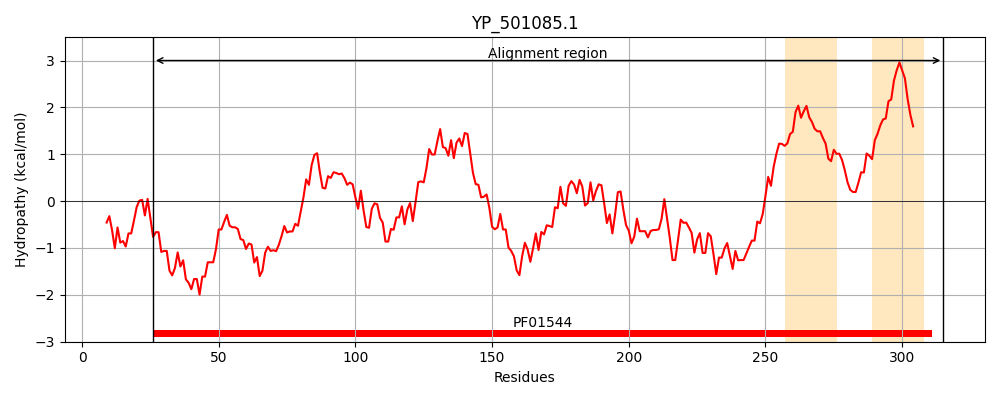
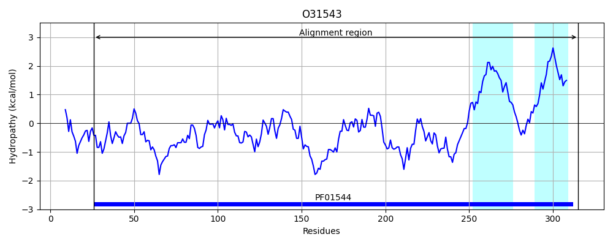

Hit Accession: O31543
Hit TCID: 1.A.35.3.3
Hit Description: gnl|BL_ORD_ID|7059 gnl|TC-DB|O31543|1.A.35.3.3 Putative metal ion transporter YfjQ OS=Bacillus subtilis (strain 168) GN=yfjQ PE=3 SV=1
Mach Len: 291
e:0.000000
Query TMS Count : 2
Hit TMS Count: 2
TMS-Overlap Score: 2.000000
Predicted Substrates:CHEBI:25213;metal cation
BLAST Alignment:
Score: 456 , Bit scores: 180 bits, E-value: 1.3e-54, Alignment length: 291, Percentage identity: 33
Query: 26 DATIVWYDFDEPNEQENEWFKAHFNFNDLEVDDAINGMPRAKYKSYKDYQYLVFHSIMGSNYSPIALNIFIQDNVLVTYHHQTLESLNKVVYKYMNTLDA-ELDCADVVILILDMMVDKYFNFVYALEDSVYHFEDRHVDDRFNKMVMDSVFKLRSDLIKVKRVLFPMQELIDTMKQNGDLIIDNKHSLYIQHIDDHLIKQRNIIRTAQEMTNEIRENFESYTSFRMNSIMQVLTLVSVIFSPLTFIAGIYGMNFVNMPALHLHYGYYICLAVMFVIAVVLIIFFRRKKWF 315
D W DF P + E + F+F+ L ++D M R K Y Y++ V H++ ++IF + +VT+H + KV + + D + + +I+D +VD+YF VY +ED + E+ + + M+ VF LR+DL+ ++R + PM++L+ + + + Y I DHL+K I+ + ++MT+++R+++ + S RMN+IM LT+VS IF PLTFIAG+YGMNF MP LH YGY+ L +M + + ++I+F K WF
Sbjct: 26 DIAWYWVDFYGPEDTETALLRDFFHFHPLAIEDCFQHMQRPKLDHYDGYRFYVIHALNKETLETEEVDIFQGEKFVVTFHLHETPGIAKVRERLYASPDILKKGPGHISYMIMDQLVDEYFPLVYKIEDRLNEIEESRPHKTYGTL-MNEVFDLRTDLLHLRRTIIPMRDLLYRILSLDHVKEQRETKAYFSDIYDHLLKLSEIVESNRDMTSDLRDSYVTLNSNRMNAIMMTLTIVSTIFIPLTFIAGVYGMNFDFMPELHWKYGYFAVLGLMAALVIGMLIWFVHKGWF 315 | Protein Hydropathy Plots: |
|---|
|  |  |
Pairwise Alignment-Hydropathy Plot:
|
|---|
|